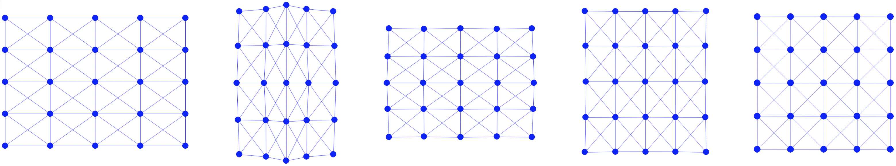

Simulator with Visualization
Having gathered all necessary elements for our 2D mass-spring simulator, the next step is to implement the simulator. This implementation will operate in a step-by-step manner and include visualization capabilities to enhance understanding and engagement.
Implementation 4.5.1 (simulator.py).
# Mass-Spring Solids Simulation
import numpy as np # numpy for linear algebra
import pygame # pygame for visualization
pygame.init()
import square_mesh # square mesh
import time_integrator
# simulation setup
side_len = 1
rho = 1000 # density of square
k = 1e5 # spring stiffness
initial_stretch = 1.4
n_seg = 4 # num of segments per side of the square
h = 0.004 # time step size in s
# initialize simulation
[x, e] = square_mesh.generate(side_len, n_seg) # node positions and edge node indices
v = np.array([[0.0, 0.0]] * len(x)) # velocity
m = [rho * side_len * side_len / ((n_seg + 1) * (n_seg + 1))] * len(x) # calculate node mass evenly
# rest length squared
l2 = []
for i in range(0, len(e)):
diff = x[e[i][0]] - x[e[i][1]]
l2.append(diff.dot(diff))
k = [k] * len(e) # spring stiffness
# apply initial stretch horizontally
for i in range(0, len(x)):
x[i][0] *= initial_stretch
# simulation with visualization
resolution = np.array([900, 900])
offset = resolution / 2
scale = 200
def screen_projection(x):
return [offset[0] + scale * x[0], resolution[1] - (offset[1] + scale * x[1])]
time_step = 0
square_mesh.write_to_file(time_step, x, n_seg)
screen = pygame.display.set_mode(resolution)
running = True
while running:
# run until the user asks to quit
for event in pygame.event.get():
if event.type == pygame.QUIT:
running = False
print('### Time step', time_step, '###')
# fill the background and draw the square
screen.fill((255, 255, 255))
for eI in e:
pygame.draw.aaline(screen, (0, 0, 255), screen_projection(x[eI[0]]), screen_projection(x[eI[1]]))
for xI in x:
pygame.draw.circle(screen, (0, 0, 255), screen_projection(xI), 0.1 * side_len / n_seg * scale)
pygame.display.flip() # flip the display
# step forward simulation and wait for screen refresh
[x, v] = time_integrator.step_forward(x, e, v, m, l2, k, h, 1e-2)
time_step += 1
pygame.time.wait(int(h * 1000))
square_mesh.write_to_file(time_step, x, n_seg)
pygame.quit()
For 2D visualization in our simulator, we utilize the Pygame library. The simulation is initiated with a scene featuring a single square, which is initially elongated horizontally. During the simulation, the square begins to revert to its original horizontal dimensions. Subsequently, due to inertia, it will start to stretch vertically, oscillating back and forth until it eventually stabilizes at its rest shape, as illustrated in (Figure 4.5.1).

In addition to storing node positions x and edges e, our simulation also requires allocating memory for several other key variables:
- Node Velocities (
v): To track the movement of each node over time. - Masses (
m): Node masses are calculated by uniformly distributing the total mass of the square across each node. This is a preliminary approach; more detailed methods for calculating nodal mass in Finite Element Method (FEM) or Material Point Method (MPM) will be explored in future chapters. - Squared Rest Length of Edges (
l2): Important for calculating the potential energy in the mass-spring system. - Spring Stiffnesses (
k): A crucial parameter influencing the dynamics of the springs.
For visualization purposes beyond our simulator, we enable the export of the mesh data into .obj files. This is achieved by calling the write_to_file() function at the start and at each frame of the simulation. This feature facilitates the use of alternative visualization software to analyze and present the simulation results.
Implementation 4.5.2 (Output Square Mesh, square_mesh.py).
def write_to_file(frameNum, x, n_seg):
# Check if 'output' directory exists; if not, create it
if not os.path.exists('output'):
os.makedirs('output')
# create obj file
filename = f"output/{frameNum}.obj"
with open(filename, 'w') as f:
# write vertex coordinates
for row in x:
f.write(f"v {float(row[0]):.6f} {float(row[1]):.6f} 0.0\n")
# write vertex indices for each triangle
for i in range(0, n_seg):
for j in range(0, n_seg):
#NOTE: each cell is exported as 2 triangles for rendering
f.write(f"f {i * (n_seg+1) + j + 1} {(i+1) * (n_seg+1) + j + 1} {(i+1) * (n_seg+1) + j+1 + 1}\n")
f.write(f"f {i * (n_seg+1) + j + 1} {(i+1) * (n_seg+1) + j+1 + 1} {i * (n_seg+1) + j+1 + 1}\n")
With all components properly set up, the next phase involves initiating the simulation loop. This loop advances the time integration and visualizes the results at each time step. To execute the simulation program, the following command is used in the terminal:
python3 simulator.py
Remark 4.5.1 (Practical Considerations). With our simulator implementation in place, it provides us with the flexibility to experiment with various configurations of the optimization time integration scheme. Such testing is invaluable for gaining deeper insights into the roles and impacts of each essential component.
Consider an example: if we opt not to project the mass-spring Hessian to a Symmetric Positive Definite (SPD) form, peculiar behaviors may emerge under certain conditions. For instance, running the simulation with a frame-rate time step size of
h=0.02and aninitial_stretchof0.5could lead to line search failures. This, in turn, results in very small step sizes, hampering the optimization process and preventing significant progress.While line search might seem superfluous in this simplistic 2D example, its necessity becomes apparent in more complex 3D elastodynamics simulations, especially those involving large deformations. Here, line search is crucial to ensure the convergence of the simulation.
Another point of interest is the stopping criteria applied in traditional solids simulators. Many such simulators forego a dynamic stopping criterion and instead terminate the optimization process after a predetermined number of iterations. This approach, while straightforward, can lead to numerical instabilities or 'explosions' in more challenging scenarios. This underscores the importance of carefully considering the integration scheme and its parameters to ensure stable and accurate simulations.